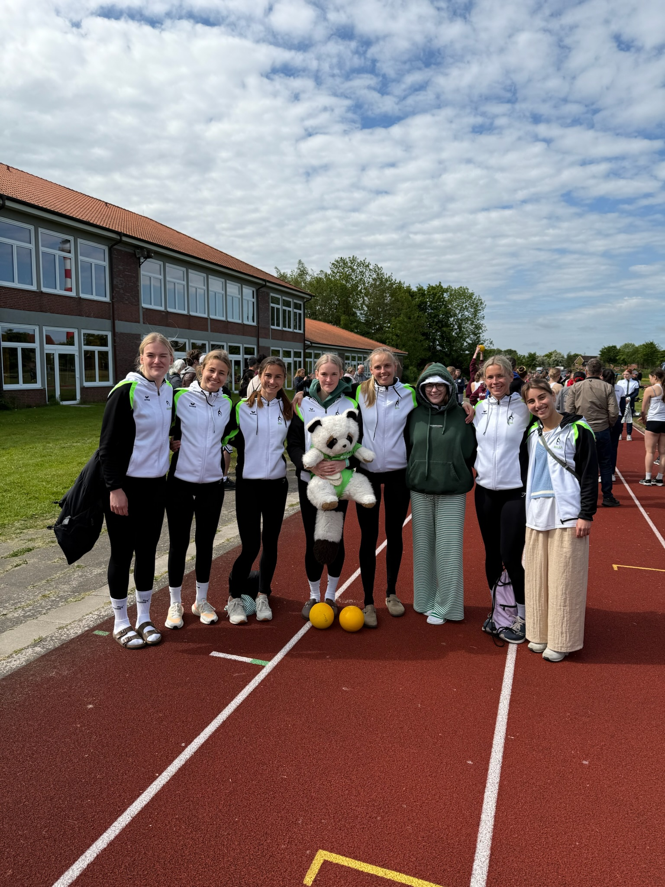
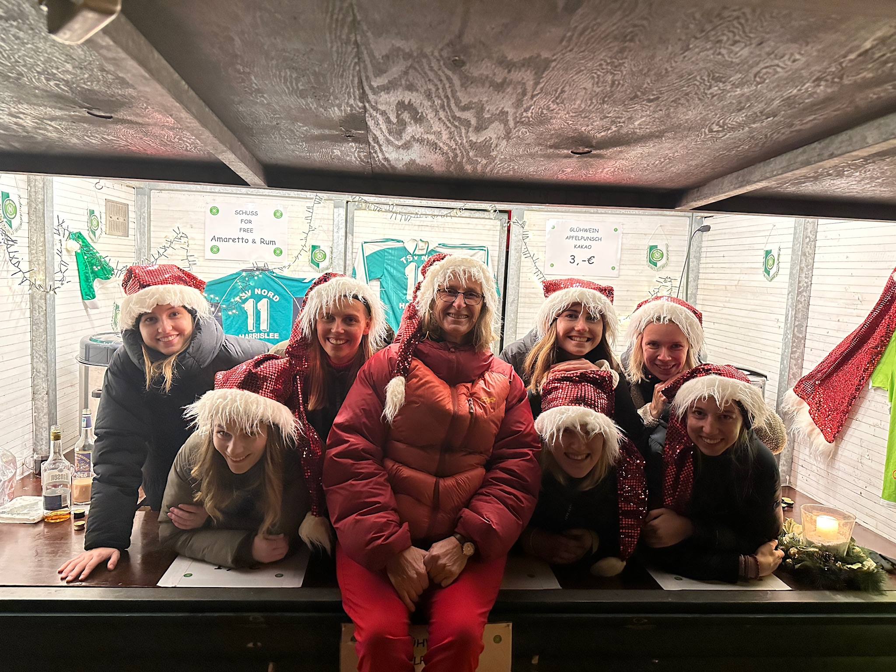
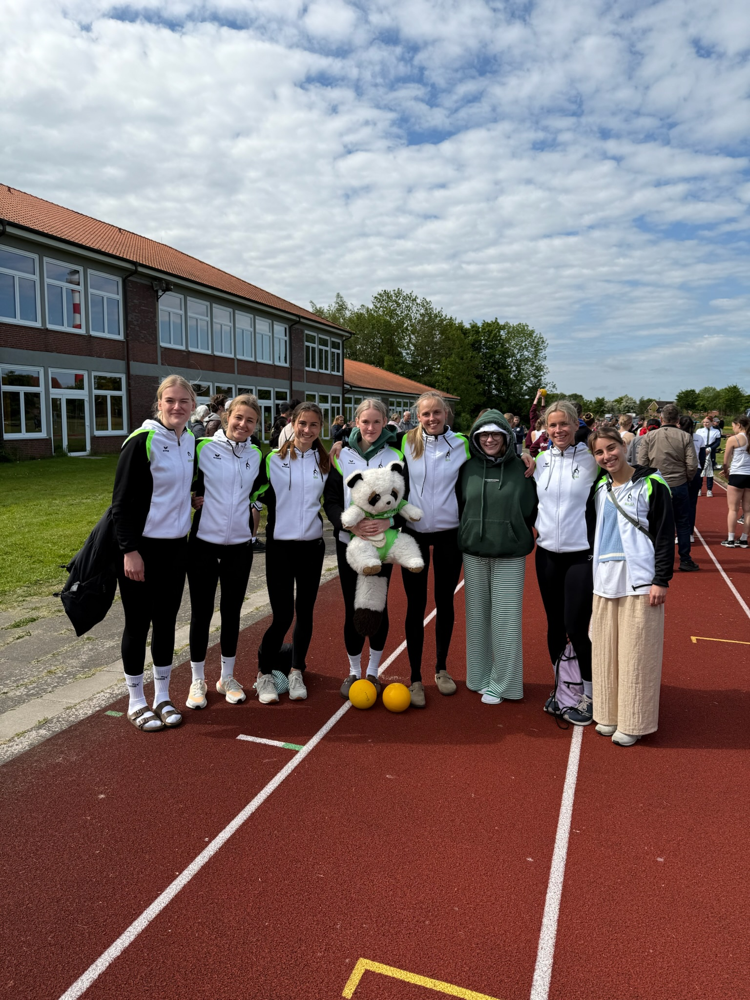
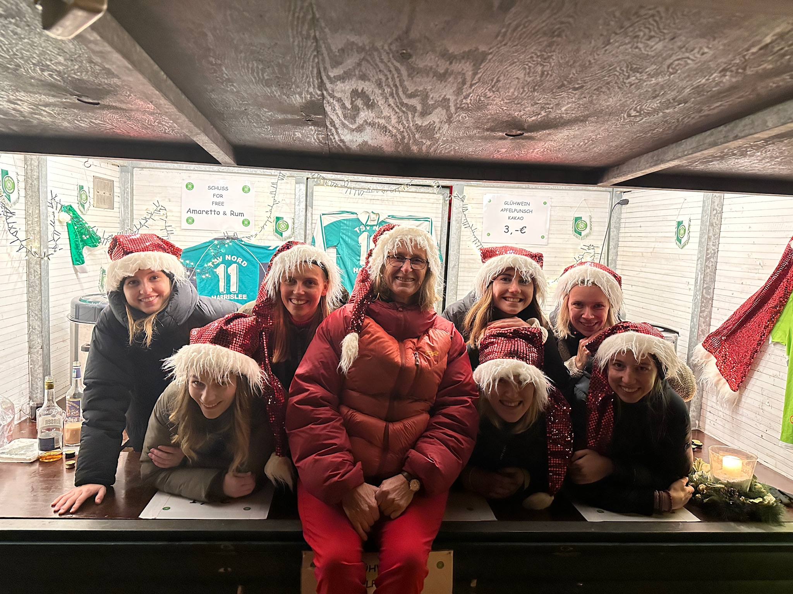

Über uns
Moin! Wir sind die Nordqueens vom TSV nord Harrislee. Wir machen TGW, das heißt Turngruppenwettkampf: Dabei zeigen wir nicht nur unser Können im Turnen, sondern auch beim Werfen und Schwimmen. Ein bunter Mix also, der Kraft, Technik und Teamgeist verbindet.
Viele von uns stehen schon seit wir fünf Jahre alt sind gemeinsam in der Halle – das merkt man: Wir sind nicht nur ein Team, sondern echte Freundinnen. Auch außerhalb der Trainingszeiten unternehmen wir gern was zusammen und haben einfach Spaß am Sport.
Unsere Trainerinnen Uschi und Wiebke sind mit Herzblut dabei und begleiten uns auf Wettkämpfe quer durch ganz Deutschland. Unser Motto: Gemeinsam stark – sportlich, nordisch, fröhlich!
News


Termine
Training
- Montag 17:00–18:00 Werfen und Kraft – Holmberg Halle
- Dienstag 18:00–19:30 Turnen – Aula
- Mittwoch 18:30–20:00 Turnen – Aula
- Freitag 18:00–19:30 Turnen – Aula
- Sonntag 10:00–12:00 Schwimmen – Campusbad
Galerie

 




Kontakt
Unsere Sponsoren


Vielen Dank für eure Unterstützung – ohne euch wär das alles nicht möglich!